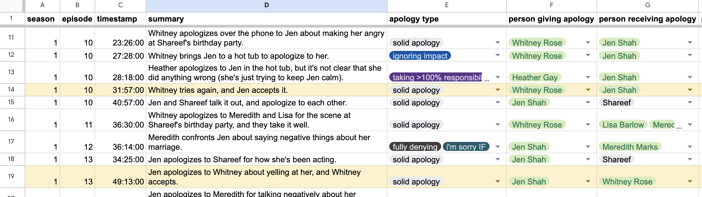

It all started when Mary said that Jen “smelled like hospital.”
Let’s rewind.
Mary Cosby and Jen Shah are cast members on The Real Housewives of Salt Lake City.
If this show isn’t on your radar, it’s time to fix that. As one of the newest installments of the Real Housewives franchise, it follows the lives of wealthy women living in or near Salt Lake City, Utah, and delivers top-tier drama.
From the first episode, it’s clear Jen and Mary don’t see eye to eye. Why? One unforgettable comment: Mary said that Jen “smelled like hospital.”
(Watch below to hear the whole story from them.)
Fast forward a bit, and the two are at a party together. Jen is still holding onto the comment and wants an apology from Mary.
Let’s see how Mary handles it.
It doesn’t end well.
In the world of reality television, apologies are a central theme. People are constantly wronging each other, confronting each other, demanding apologies, and – more often than not – sidestepping them. We can tell the apologies don’t work because the same issues resurface in the next episode, again and again.
To understand just how bad these apologies are, I went through every episode of The Real Housewives of Salt Lake City and documented the apology moments.

These are all the moments when an apology was being attempted or demanded. Almost every episode has at least one.
And here’s how often it was actually a decent apology as opposed to one like Mary’s. 52% of the apologies are flagrantly bad. If the apologizer 1. acknowledged the action, 2. expressed remorse genuinely, and 3. the recipient accepted it, I classified it as good enough.
And while some cast members do a better job than others…
Good vs. bad apologies by character
It’s clear that bad apologies are as central to the show (if not more) than good ones.
Why are the women of RHOSLC so bad at apologizing? To find out, I watched all 91 episodes and dissected some of the messiest moments with a therapist. This show is unwittingly a masterclass in how not to apologize, which turns out to hold lessons for all of us on how to get it right.
This is how many times each cast member has said the word “sorry” on the show.
This is excluding times where the word was used outside of the context of an apology. Some people say it freely, others not so much.
Total 'sorry's by character
Is saying “sorry” what makes an apology? The presence of the word is a decent proxy for a good apology. If someone doesn’t want to say it, it feels like they’re sidestepping a true apology. There’s a lot present in the two words – taking ownership, showing remorse. It’s simple, but powerful.
[venn diagram of “sorry” and good apology]
Let’s take a look at a moment from Jen, #2 “sorry”-sayer.
Total 'sorry's by character
Here, Jen is attempting to apologize, but just can’t help adding some more after the “sorry.”
That’s psychotherapist and author Lazarus Lynch. I showed him some scenes from the show to get his take.
In this scene, Jen keeps trying, but the hypnotist cuts her off.
Adding on excuses and explanations are surefire ways to weaken an apology. A simple “sorry” has most of what’s needed already.
But we don’t want to give “sorry” too much weight. Sometimes the word becomes a magic wand, a shortcut to accomplishing everything an apology needs without trying.
Like here, where Britani decides she wants to “officially” apologize for saying rude things about Bronwyn’s husband. She goes through the motions, but it doesn’t land.
Or here, where Lisa repeatedly shouts “I’m sorry for your loss!” at Whitney, which also doesn’t land.
So while a simple “sorry” can accomplish a lot, it doesn’t always equate to a good apology. What “sorry” teaches us, though, is the value of keeping it simple – just standing in it, instead of scrambling to defend or explain.
[venn diagram]
Why is it so hard for us to just stand in it? Let’s focus on Lisa Barlow, who apologizes a lot, but has one of the lowest rates of effectiveness.
Good vs. bad apologies by character
Here, Meredith shares that she didn’t feel like Lisa was there for her when her father died.
At the very end when Lisa says “I’m a horrible person”, an over-exaggerated “apology”, I think we get a glimpse into what Lisa feels is at stake here.
clip of lazarus about internal conflict
Although I’ve never met anyone quite like Lisa Barlow, I know many people (myself included) who fall into this trap when asked to apologize: mistaking it for an attack on our character, and getting defensive.
It’s as if the conversation is no longer about the dismissive tone I used earlier or forgetting to unload the dishwasher, it’s about something much bigger and more threatening: whether you see me as a good, kind person, and more importantly, whether deep down I do.
This moment from psychologist and author on apologies Harriet Lerner’s Ted Talk encapsulates it well:
“In order to apologize, a person needs to have a big, sturdy platform of self-worth to stand on… but some people stand on a small, rickety platform of self-worth. They can’t let themselves really see the hurt that they’ve caused because to do so would flip them or threaten to flip them into an identity of worthlessness and shame. The non-apologizer walks on a tightrope of defensiveness above a huge canyon of low self esteem.”
When apologies send us into a shame spiral, it becomes much harder to apologize effectively.
This next scene depicts another psychological barrier to apologizing that I also relate to. Watch Bronwyn try to apologize to Heather.
Bronwyn is apologizing with the goal of getting Heather to apologize as well. I think it’s pretty common for both parties to think they deserve some sort of apology. Which can result in a standoff, no one wanting to apologize first. Because what’s the worst that could happen: you put yourself out there and apologize, and the other person just walks away and you don’t get what you need. So, a strategy: trade apologies! Now the apology becomes transactional, and risks feeling that way, rushed, with an agenda. And it doesn’t land with Heather because of that.
Paradoxically, the only way they’re going to each get apologized to is if one of them apologizes fully, without agenda. Knowing that there isn’t a scarcity or limited number of apologies to go around. Just because you apologize doesn’t mean you lost or that you’re weakening yourself, you’re paving the way for healing, but only if you go all the way.
When I first started going through these apology moments, I figured a key piece of what would make for a good apology was that it seemed genuine and that the other person received it as genuine.
But Lazarus actually said he doesn’t consider genuineness to be an important part of a good apology – just because someone seems sorry doesn’t necessarily mean they really are or that real healing will happen.
That might help explain this – here are Jen Shah’s apologies. Fans of the show might be surprised that she has the highest total number of solid apologies and a decent effectiveness rate.
Good vs. bad apologies by character
Jen actually does apologize a lot. And she does a good job. She owns it, she shows remorse, vows to do better. Like here, where she apologizes to Meredith and Seth about saying mean things about their marriage.
Or here, where she apologizes for her behavior while also sharing context on her childhood that helps explain (but not excuse) her actions.
So, is Jen the queen of apologies and healthy, harmonious relationships?
Not so much. The problem with many of Jen’s apologies is that after these moments, she turns around and does the same thing again. So, are these effective apologies?
There’s more to an apology than what is said in the moment. There’s also what happens after the apology.
If the goal of an apology is to create healing, change on the other side needs to be demonstrated for it to hold up.
This also explains why so many issues on the show recur again and again, ready to be brought up at any minute. The final step of actually facing the thing you apologized for, bettering yourself, and being different rarely occurs.
It can be infuriating to watch these ineffective apologies and constant conflict. As audience members, we feel like we can see where they went wrong, why the apologies aren’t working, thinking we would do better if we were in their shoes.
But would we?
In regular life, we often withhold our grievances, and we are not nearly this confrontational.
When’s the last time you demanded an apology from someone?
This show shows us what happens when you’re not allowed to stop hanging out with people you sort of hate, so you are forced to manage conflict!
These women are encouraged to share their feelings, air their grievances, and confront people, which all make for great TV. And frequent, if messy, apology attempts.
It’s easy to watch and think “I’m nothing like these women.” It’s harder to take a look at the ways in which these women are addressing conflict more than we ever would, and even though they often do a bad job, it’s in a lot of the same ways that you or I would.
Apologies are a core part of human relationships. We’re all so different and so flawed, and we’re bound to mistreat one another, at least occasionally.
Lazarus ended our conversation by saying, “if you’re in healthy relationships with people, you’ll have to apologize and they’ll have to apologize to you.”
Seeking or attempting an apology isn’t something to be ashamed of, it’s a sign you care about a relationship and want to work towards healing.